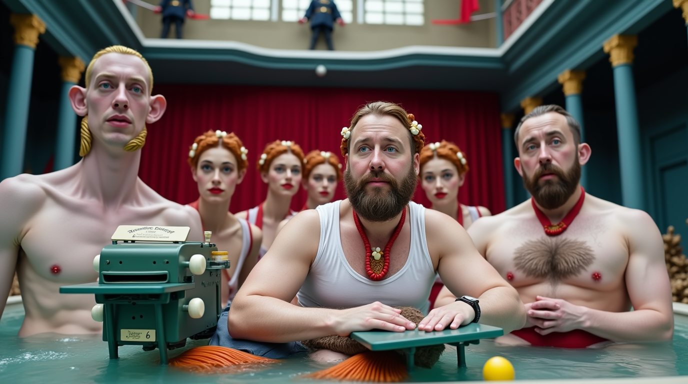
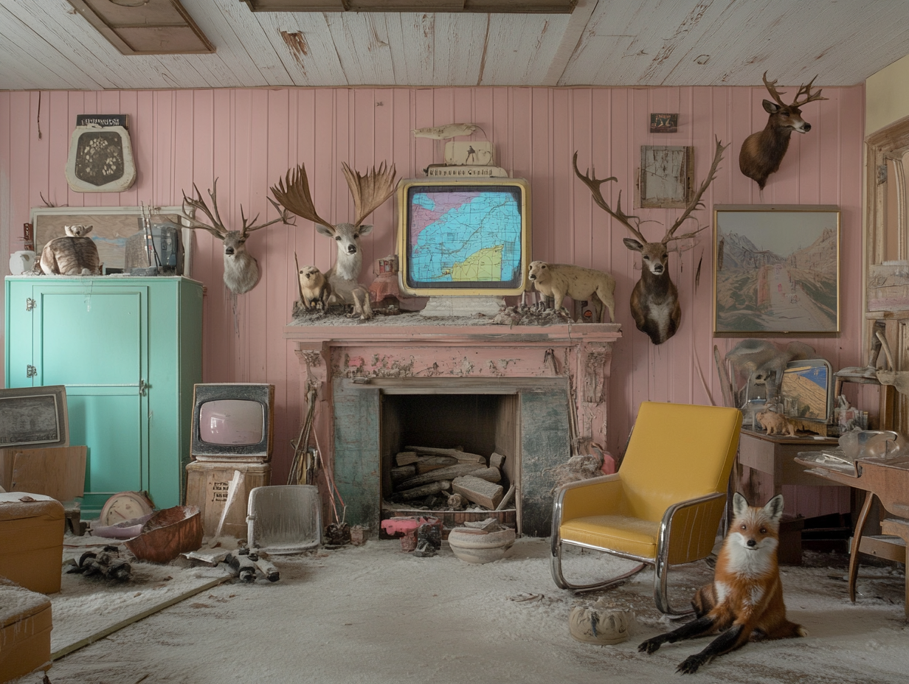
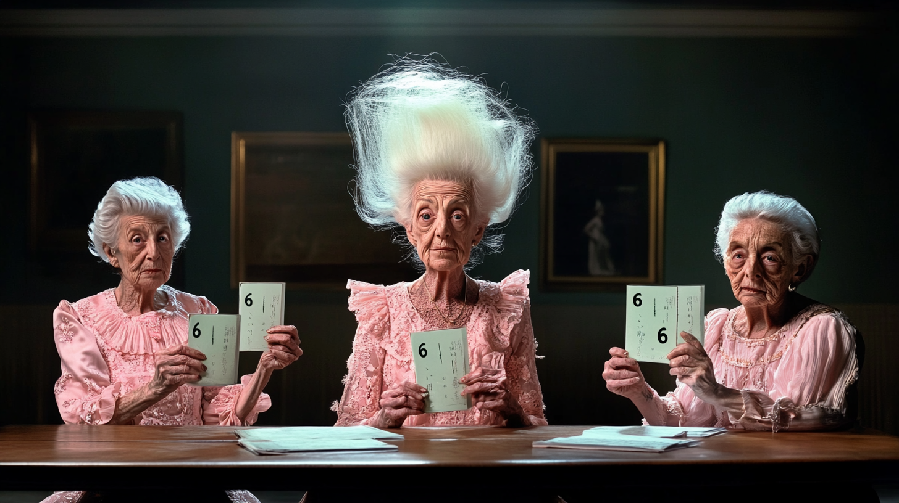

Shell Shock
Currently in preproduction
— Studio Einfühlung

A surreal and darkly absurd story set in a decaying, opulent mansion where the lines between ambition, rivalry, and the ridiculous blur. Featuring characters that include a polar bear who ice skates, a failing sideshow strongman, a sharp-tongued mother-in-law, a nationally televised facial hair competition, bees, eggs, bathhouses, and beards—both real and prosthetic—Shell Shock unfolds as a kaleidoscope of ambition and absurdity.
In a world where facial hair competitions are televised like Olympic events and polar bears can triple axel, we follow Chet Gapetti, a strongman whose career is as wobbly as his knees during a deadlift. When his former ice-skating partner trades him in for a more graceful dance companion—a polar bear named Efimovich—Chet's world begins to crack like the thin ice beneath an overconfident skater.
Desperate to prove his worth, Chet enters the National Beard and Moustache Championships, despite his inability to grow more than a few patchy whiskers. His solution? A mysterious prosthetic beard that seems to have a mind of its own. As Chet navigates the cutthroat world of competitive facial hair, he must contend with his arch-rival G-Rock, his disapproving mother-in-law Mata ZuckerKlunk, and the increasingly strange behavior of his artificial beard.

With Shell Shock, I set out to explore the tension between ambition, identity, and the absurd in a world teetering between decaying traditions and theatrical spectacle. At its core, this is a story about fractured relationships, rivalries, and self-definition, all unfolding within a setting that is surreal and unsettlingly familiar.
Director's Statement
With Shell Shock, I set out to explore the tension between ambition, identity, and the absurd in a world teetering between decaying traditions and theatrical spectacle. At its core, this is a story about fractured relationships, rivalries, and self-definition, all unfolding within a setting that is surreal and unsettlingly familiar.

The title, Shell Shock, carries multiple connotations. It nods to the dramatic and absurd egg battle that unfolds within the film, a central motif both literal and symbolic. Eggs, fragile yet enduring, serve as a metaphor for life, potential, and transformation. The title also hints at deeper emotional fractures, evoking the psychological toll of ambition and rivalry, particularly in the heightened world of sideshow circuits and televised competitions. The characters—many teetering between tragic and comical—find themselves navigating personal and existential crises against a backdrop of decayed grandeur and exaggerated spectacle.
The film's ensemble cast is as eclectic as its themes. At the center is Chet Gapetti, a washed-up sideshow strongman whose dreams of glory lie not in feats of strength but in winning a nationally televised beard competition. His former wife, Claudine, now partners with a polar bear—a literal replacement for Chet—embodying both the absurdity and heartbreak of his fall from grace. G-Rock, a flamboyant and scheming rival, fuels the chaos, while Mata ZuckerKlunk, the caustic mother-in-law, sharpens the interpersonal tensions with her biting commentary. Together, they inhabit a world that is as much about performance as it is about survival.

Desperate to prove his worth, Chet enters the National Beard and Moustache Championships, despite his inability to grow more than a few patchy whiskers. His solution? A mysterious prosthetic beard that seems to have a mind of its own. As Chet navigates the cutthroat world of competitive facial hair, he must contend with his arch-rival G-Rock, his disapproving mother-in-law Mata ZuckerKlunk, and the increasingly strange behavior of his artificial beard.

Thematically, Shell Shock examines the idea of spectacle as both an escape and a trap. The characters are driven by deeply personal ambitions—some noble, others petty—and their pursuit of recognition often leads to chaos. Beneath the surface, the story carries an undercurrent of power struggles that subtly mirror real-world dynamics, particularly those between major AI companies and their competing visions for the future. Much like the domestic and interpersonal dramas of the film, these power struggles play out on all scales—human and corporate—making the absurd personal conflicts of the characters feel eerily reflective of larger global tensions.

Adding another layer to this narrative is the fact that none of the actors in Shell Shock are real. Every performance is generated through advanced AI tools, with their dialogue facilitated by the very large language models (LLMs) from which their names are derived. For instance, Chet Gapetti nods to ChatGPT, Claudine III Anthropocinni evokes Claude AI, and G-Rock playfully references Grok. These layered references invite sharp-eyed viewers to spot connections and serve as commentary on the ways AI tools shape both the creative process and the culture surrounding them. Even Hinton, the polar bear's original trainer in the film, is a subtle nod to AI pioneer Geoffrey Hinton, adding another layer for those familiar with the history of AI development.
This technology has made possible the kinds of physiological embellishments and character designs that would have been nearly unthinkable for someone working outside the traditional filmmaking industry. What once required hours of prosthetics, elaborate costumes, or advanced CGI can now be refined through iteration until the look aligns with the director's vision. Importantly, these tools are not intended to displace the incredible talents of makeup artists, costume designers, and visual effects professionals—skills I deeply respect. Rather, they act as a supplemental means for individuals like myself, working without access to traditional resources or crews, to experiment and realize projects that would otherwise remain purely conceptual.

I am acutely aware of the ethical and economic concerns surrounding AI, and I approach this technology with a sense of responsibility. Were it not for these tools, I would not have dared to dream of creating something on this scale. My use of AI is not about replacing existing systems but about finding a place for new, collaborative processes in the creative ecosystem. These tools have opened up possibilities for me as an artist to participate in a world I admire from the outside, enabling me to bring to life visions that were previously out of reach.

Stylistically, Shell Shock draws from my fascination with faded grandeur and theatricality, placing these characters in a decaying mansion that becomes a stage for their ambitions, betrayals, and absurd pursuits. The collision of anachronistic elements—Victorian bathhouses, prosthetic beards, ice-skating polar bears—reflects the fractured psyches of its characters and their struggle to reconcile who they are with who they want to be.
At its heart, Shell Shock is about the absurdity and poignancy of ambition, the tensions of loyalty and rivalry, and the fragile connections that hold us together in a world that often celebrates spectacle over substance. By combining generative AI technologies with traditional storytelling instincts, my goal is to create a film that blurs boundaries—between reality and artifice, sincerity and satire, and tradition and innovation. My hope is that Shell Shock challenges viewers to reflect not only on the characters' absurd journeys but also on the ways in which ambition, rivalry, and creativity intersect in our own lives and industries.
Characters

Chet Gapetti
A failing strongman with big dreams of beard championship glory.

Claudine III
A former ice-skating partner who replaced Chet with a polar bear.

G-Rock
A friend-turned-competitor who thrives on drama.

Mata ZuckerKlunk
The sharp-tongued mother-in-law who disapproves of everything.

Efimovich
A mysterious polar bear with an uncanny grace on the ice.
Behind the Scenes
"The beard competition wasn't just about winning. It was about proving something to myself, to my mother-in-law, and to that damn polar bear." - Chet Gapetti
"Ice skating with a polar bear? It's actually quite simple once you get the timing right. The hard part is keeping the ice cream away from him during rehearsals." - Claudine III